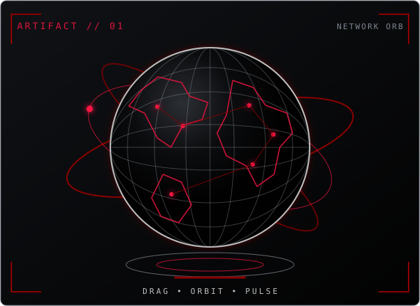

INTERACTIVE SYSTEM // ARTIFACT ARRAY 01–02
Drag to rotate. Move to inspect. Scroll or pinch to adjust range. Select an artifact to release a restrained energy pulse.


WebGL is unavailable. The GitHub-safe animated artifact set is shown instead.
Graphite sphere · silver telemetry grid · crimson node field
Smoked crystal · metallic edges · suspended energy fragments
Reduced motion is active. Direct interaction remains available.